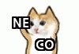

Call for Papers
Misinformation is regarded as a problem that has reached new heights in the current information sphere, partly due to the ease, the diversity of mediums, the reach, and the consequences of information dissemination.
MEDIATE's topics of interest include, but are not limited to:
- Political Misinformation
- Traditional phenomena in political misinformation such as filter bubbles, echo chambers, and polarisation
- Intentional or unintentional self-misinformation, i.e., how well people consume information, whether it is authentic or fake
- Analysis on how dire, measurable, or controllable these phenomena are and what is the effect of time on them
- Scientific Misinformation
- Studies on pseudo-scientific news that has deceived the public (e.g., the anti-vaccination movement or the coronavirus remedies quackery)
- Discussions on journalists' trade-off between using appealing and accessible language, and accurately reporting research findings
- Methodologies for effective communication of science to a non-specialized and broad audience via news
- Social Initiatives against Misinformation
- Proposals to redesign the news ecosystem with an enhanced role for some key players (e.g., regulators, sociologists, educators, scientists, etc.)
- Media practitioners' perception of the shift from traditional journalism to computational journalism (i.e., an outline of the main acknowledged opportunities and caveats)
- Personalisation, moderation of user engagement, and other concrete examples of how scientific innovation can impact the spread of misinformation
Submission instructions
Extended abstracts must be not anonymized and up to 2 pages long.
Submissions must adhere to the ACM format published in the ACM Guidelines, selecting the generic sigconf sample.
Submissions must be self-contained, in English and in PDF format.
The submission website is https://easychair.org/conferences/?conf=mediate2020.
Important Dates
- April 2020: Submission deadline
- April 2020: Authors notification
- April 2020: Camera ready deadline
All deadlines are 23:59, anywhere on earth.

We are running our workshop in parallel with NECO 2020, the international workshop on News and Public Opinion. If you are planning to submit your work, please consider the following as a rule of thumb:
- News and Public Opinion: please submit to NECO
- Social and News Media and Misinformation: you are in the right place